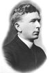

FORMER JUDGES
Judge James J. Moran
James J. Moran was born on November 12, 1973 in Adams County, Indiana. He was
Admitted to the jay County Bar in 1895 and graduated from Indiana Law School in
1896. In 1898, he married Elizabeth Sommers.
In 1910, Judge Moran ran for Judge of the Jay Circuit Court and took office on January
1, 1911. Governor Samuel Ralston appointed him to the Indiana Appellate Court to
replace Judge Frank Powers, who died in office, Judge Moran served one term, from
February 10, 1915 to January 1, 1919.
After his services on the Appellate Court, Judge Moran returned to the practice of law,
and became known an expert in appellate practice and procedure. In 1921. He joined
the American Bar Association, regularly attending its meetings. He served a year as
president of the Indiana State Bar Association in 1923. In 1938, he returned to the
Jay Circuit Court to serve out the unexpired term of Judge Hanson F. Mills.
Elizabeth Moran preceded her husband in death, in 1948. Judge Moran died
on April 20, 1951.
Admitted to the jay County Bar in 1895 and graduated from Indiana Law School in
1896. In 1898, he married Elizabeth Sommers.
In 1910, Judge Moran ran for Judge of the Jay Circuit Court and took office on January
1, 1911. Governor Samuel Ralston appointed him to the Indiana Appellate Court to
replace Judge Frank Powers, who died in office, Judge Moran served one term, from
February 10, 1915 to January 1, 1919.
After his services on the Appellate Court, Judge Moran returned to the practice of law,
and became known an expert in appellate practice and procedure. In 1921. He joined
the American Bar Association, regularly attending its meetings. He served a year as
president of the Indiana State Bar Association in 1923. In 1938, he returned to the
Jay Circuit Court to serve out the unexpired term of Judge Hanson F. Mills.
Elizabeth Moran preceded her husband in death, in 1948. Judge Moran died
on April 20, 1951.
